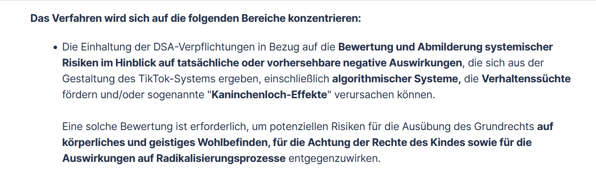

Muslim TikTok in Germany
A Community Navigating Religion, Racism, and Radicalization in the Digital Age
Nader Hotait
May 6, 2025
The Background
Introduction
The Gensis of this Dissertation
- D:Islam Project: German Islam as an alternative to “Islamism”?
- Funded by German Federal Ministry of Education and Research
- Emergence of a so called “German Islam” between anti-Muslim racism and “Islamism”
- 3 modules, 2 PIs, 5 research associates, 2 student assistants

Introduction
The Gensis of this Dissertation
- D:Islam Project: German Islam as an alternative to “Islamism”?
- Funded by the German Federal Ministry of Education and Research
- RaPoTik Project: Radicalization Potentials on TikTok
- Funded by Berlin State Commission against Violence
- Objectives:
- Prevalence and effect of extremist material on TikTok
- Automated TikTok analysis tool
Introduction
Muslims, Media, and Extremism
Introduction
“Islamism” and Online Extremism
A journey
- 1999 Columbine High School massacre: “first mass shooting of the internet age” (Peterson et al. 2023, 2)
- 2001 9/11 attacks: Al-Qaeda and the “electronic jihad” (Rudner 2017)
- 2014 Emergence of ISIS: A strategic social or. digital media campaign (e.g. Awan 2017)
Introduction
“Islamism” and Online Extremism
Introduction
“Islamism” and Online Extremism
Introduction
Aftermath of the “War on Terror”
The securitization of Muslims
- Construction of Muslims as a “suspect community” (Kundnani 2012, 2014)
- German Muslims under “Generalverdacht” (Attia, Keskinkılıç, and Okcu 2021; Andersen and Mayerl 2018; Halm 2013)
- Resulting in increased surveillance, discrimination, negative media and policing bias, etc.
Introduction
Aftermath of the “War on Terror”
The securitization of Muslims
- Construction of Muslims as a “suspect community” (Kundnani 2012, 2014)
- German Muslims under “Generalverdacht” (Attia, Keskinkılıç, and Okcu 2021; Andersen and Mayerl 2018; Halm 2013)
- Part of the omnipresence of discrimination and racism faced by Muslims in Germany from channels not specifically linked to extremism(e.g. Unabhängiger Expertenkreis Muslimfeindlichkeit 2023)
Introduction
Muslims on Social Media
Two Research Venues
- Extremist use of social media, for:
- Recruitment and organization
- Propagandization
- Radicalization
- Recruitment and organization
→ Focus on the affordances of social media to create and disseminate content at low to no cost, create visibility, pseudonymization, global interconnectedness, fast communication
Introduction
Muslims on Social Media
Two Research Venues
→ Focus on the affordances of social media to create and disseminate content at low to no cost, create visibility, global interconnectedness, fast communication, and creating alternative spaces
- Use of social media, for:
- Community building and knowledge exchange
- Creating counter-narratives, mobilization, and activism
- As a consequence of marginalization!
Introduction
TikTok and the “Extremism Problem”?

Introduction
Suspicious for good reasons?
TikTok
- Existence of extremist material (see Hartwig, Seelig, and Buğur 2023; Hohner, Kakavand, and Rothut 2024)
- Algorithmic content suggestion based on interests and virality (see TikTok 2020)
Research
- Consumption of such content could lead to radicalization (see Hassan et al. 2018)
- Possibly opening rabbit holes, allowing exposure to extremist content (e.g. Hotait 2022)
Introduction
Excursion: TikTok rabbit hole?
Introduction
Suspicious for good reasons?
TikTok
- Existence of extremist material (see Hartwig, Seelig, and Buğur 2023; Hohner, Kakavand, and Rothut 2024)
- Algorithmic content suggestion based on interests and virality (see TikTok 2020)
- Over one billion (Pappas 2021) mostly young users (Bestvater 2024; Koch 2023)
Research
- Consumption of such content could lead to radicalization (see Hassan et al. 2018)
- Possibly opening rabbit holes, allowing exposure to extremist content (e.g. Hotait 2022)
- Young people radicalize more often (Acevedo and Chaudhary 2015; Ellis et al. 2021)
Systematic and comprehensive studies of potentially radical content produced in the (German) Muslim subspace on TikTok, the practice of its consumption and the role of the algorithm as mediator are largely absent.
Introduction
What about the good tho?
Social Media generally
- Muslims (mostly) use social media for quite mundaine pursuits: food, beauty, and lifestyle (Bunt 2018; Karakavak and Özbölük 2022; Nisa 2021; Törnberg and Törnberg 2016)
- The Internet as a (alternative) space for self-expression, visibility, and community building in the context of marginalization and a discriminatory society (Bahfen 2018; Pennington 2018b; Piela 2012; Rozehnal 2022)
- Opportunities for political activism against anti-Muslim racism, including the securitization of Muslims (Aydin 2023; Civila, Bonilla‐del‐rio, and Aguaded 2023; Downing and Dron 2022)
- Particularly empowering for Muslim women, to negotiate religious norms and cultural practices (Akou 2010; Pennington 2018a; Piela 2010, 2012)
Introduction
What about the good tho?
TikTok for the marginalized
- TikTok as a means for representation, community building, and creating counter-narratives for marginalized groups (Civila, Bonilla‐del‐rio, and Aguaded 2023; Vizcaíno-Verdú and Aguaded 2022)
- Also venue for extremist actors to target vulnerable audiences on the basis on experiences of marginalization (see Hartwig, Seelig, and Buğur 2023; Hohner, Kakavand, and Rothut 2024)
Little research on (positive) TikTok content production by (German) Muslims and how it relates to radicalization, given TikTok’s platform characteristics.
Introduction
Reserach Questions
There remains a critical research gap regarding the content produced by German Muslims on TikTok and its impact on users. Major questions remain unanswered: What content do German Muslims produce on TikTok, and how does this content lead to radicalization or not? Against this backdrop, this dissertation examines the representation of German Muslims on TikTok and the consequences of this representation. The fundamental research questions that guide this study are:
- RQ1: What topics and issues do German Muslims address in their TikTok content?
- RQ2: How does this content relate to religion, (anti-Muslim) grievances, and radical ideologies?
- RQ3: How does the consumption of this content affect the values and attitudes of German Muslim TikTok users? Does it promote radicalization and/or act as a preventive force?
Introduction
Roadmap
Roadmap
Table of conents
Roadmap
Publications
Roadmap
Theoretical Framework
Theory
What is Radicalization?
The adaptation of attitudes and behaviors that constitute “a significant deviation […] from basic legal and political norms and values within a social system (society or state) that seek their (at least partial) abolition and replacement” (Beelmann 2020, 2)
Theory
What is Radicalization?
- “The concept of radicalization as a source of confusion” (Sedgwick 2010)
- “[…] readiness to engage in illegal and violent political action” (Moskalenko and McCauley 2009, 240)
- “to be a radical is to reject the status quo, but not necessarily in a violent or even problematic manner. Some radicals conduct, support, or encourage terrorism, whilst many others do no such thing, and actively and often effectively agitate against it” (Bartlet and Miller 2012, 2)
- “advocating sweeping political change, based on a conviction that the status quo is unacceptable while at the same time a fundamentally different alternative appears to be available to the radical” (Schmid 2013, 8)
Theory
Theoretical Framework
The common sense

Exposure to extremist content potentially leads to radicalization (Hassan et al. 2018)
One mechanism cited is information provision (Mølmen and Ravndal 2021)
“a grievance, a culprit, and a method” (Arie W. Kruglanski et al. 2014, 382)
Opposite should be possible in theory as well
Media diets and the “echo chamber” (Dubois and Blank 2018)
Diversity of ideas and dogmatism (Hunsberger, Pratt, and Pancer 1994; Arie W. Kruglanski 2004)
Practitioners
Theory
Theoretical Framework
Algorithmic curation

No exposure without recommendation
Recommendation algorithms or systems are designed to “generate meaningful recommendations to a collection of users for items or products that might interest them” (Melville and Sindhwani 2017)
Tiktok: Based on interests, usage, interaction patterns, settings etc. (TikTok 2020)
Theory
Theoretical Framework
The “how” question

TikTok is somewhat based on “voluntary” consumption (ForYou-Page)
TikTok’s logic of content production, consumption, interaction, and visibility (Abbasi et al. 2023; Abidin 2020; Barta and Andalibi 2021; Bhandari and Bimo 2022; Schellewald 2023; Vaterlaus and Winter 2021)
Factors such as relatability, authenticity, humor, controversy, and even video length play a critical role in driving user engagement
Sound, music, visual effects, and the overall video production itself has a significant impact on how engaging and watchable a video is (Cheng and Li 2023; Ling et al. 2022; Schellewald 2023)
Theory
Theoretical Framework
Persuasive power

Media content must be persuasive to cause attitude change
Slater, Rouner, and Long (2006), 238: engrossing narratives or characters, perceived similarities (cognitive), sharing emotions and experiences (affective)
Polletta and Redman (2020), 4: The power of stories to mobilize a recipient “lies in their ability to elicit empathy for the protagonist and, as a result, support for the larger cause” (4) and victim effect
Theory
Theoretical Framework
Psycho-social context

Demopgrahic, individual, micro-, and macro-environmental factors affect risk towards radicalization Emmelkamp et al. (2020)
Victimization and marginalization a central facilitator
Thus, psycho-social contextual factors influence the susceptibility to radicalization, the potential of (victim) narratives to persuade, the willingness to get involved, as well as the content suggested by both personal/shared interests.
Theory
Approach and Methodology
Methods
Recap: Research Questions
- RQ1: What topics and issues do German Muslims address in their TikTok content?
- RQ2: How does this content relate to religion, (anti-Muslim) grievances, and radical ideologies?
- RQ3: How does the consumption of this content affect the values and attitudes of German Muslim TikTok users? Does it promote radicalization and/or act as a preventive force?
Methods
Overall appraoch
- Examining both positive and negative representations of Muslims on the platform.
- Integrating qualitative-hermeneutical and quantitative methodologies for a comprehensive analysis.
- Investigating the content production and consumption side of TikTok.
- Applying gendered approaches to compare and highlight the experiences of male and, particularly, female Muslim TikTok users.
Methods
Research Design: RQ 1 & 2
Paper 1
- In-depth qualitative analysis of Female Muslim TikTok accounts
- 32 accounts, 320 videos (10 random videos)
- Snowball sampling
- Deductive coding framework (aspects to be coded)
- Topics, video formats, and content types
- Inductive coding process (content)
Paper 2
- Mixed-method analysis of German Islamic TikTok accounts
- 43 accounts, 2983 videos (all videos)
- Snowball sampling plus addition from existing research
- Theory derived (anti-)radicalism indicators
- Inductive coding of topics
Methods
Research Design: RQ 3
Paper 3
- Field-experiment with 99 German Muslim participants
- 14-day-intervention with TikTok accounts with differing content
- Prior and posterior survey on extremism and demography
- Data donations of user data
- 2 Treatment groups, 1 Control group
- Descriptive: Uni- and bivariate analysis
- Multivariate: Changes in willingness to engage in violence or illegal action given discrimination and social exclusion
- Before and after intervention, between groups
- \(\text{DiD} = \left( E[Y_{post} \mid T=1] - E[Y_{pre} \mid T=1] \right) - \left( E[Y_{post} \mid T=0] - E[Y_{pre} \mid T=0] \right)\)
Methods

Findings
Findings
Topics
| Main Topic | n |
|---|---|
| Personal and Social Life | 103 |
| Beauty, Style, and Fashion | 70 |
| Promotion, Tips, Commerce, Inspiration | 62 |
| Religious and Theological Topics and Knowledge | 59 |
| Social Justice and Political Advocacy | 50 |
| Hijab and Life as a Hijabi | 39 |
| Lived Religion | 36 |
| Self(re-)presentation | 14 |
| MISC | 11 |
| (Post)Migration | 10 |
| Indicator | Total | Pro* (Count) | Anti* (Count) | Description (Pro*) |
|---|---|---|---|---|
| Victimization | 150 | 150 | 0 | Victimization of Muslims/Muslim nations |
| Merciless Theology | 150 | 22 | 128 | Vengeful theology, no error tolerance |
| Monism | 47 | 24 | 23 | Only one correct interpretation of Islam |
| Activism | 19 | 19 | 0 | Promotion of legal political activism |
| Emancipation | 19 | 16 | 3 | Emancipation of people/groups, rights to education |
| Interfaith | 17 | 15 | 2 | Interfaith cohesion, respect, collaboration |
| Delegitimization | 15 | 15 | 0 | Rejection of democratic legitimacy and political institutions |
| Closure | 11 | 3 | 8 | Exclusion of differing Muslims from social life |
| Sectarianism | 10 | 9 | 1 | Denigration of Islamic sects, Takfirism |
| Revisionism | 8 | 8 | 0 | Call for (re)establishment of Caliphate or Islamic dynasties |
| Dehumanization | 7 | 3 | 4 | Denying humanity of others, harsh insults |
| Dichotomization | 5 | 4 | 1 | Dividing world into friend/foe groups |
| Violence | 2 | 0 | 2 | Use of physical violence for political/religious goals |
| Topic | Count | Content |
|---|---|---|
| Advocacy | 1144 | Religious Advocacy, Reminders, Teachings, etc. |
| Lifestyle | 593 | Clothing, Food, Travel, Music, Dance |
| Kinship | 385 | Partnership, Family Relations |
| Morality | 295 | Moral Constitution/Morality of Society and People |
| Permissibility | 272 | What is allowed/not allowed in Islam (haram/halal) |
| Motivation | 206 | Empowering people, Spiritual support, Encouragement |
| History | 165 | Stories from History, History as a topic |
| Ramadan | 147 | Ramadan and Fasting |
| Afterlife | 144 | Death, Heaven, Hell |
| Gender | 124 | Gender Relations |
| Headscarf | 110 | Hijab, Headscarf, Veiling |
| Conversion | 73 | Converts’ Stories, Conversion to Islam |
| Western hypocrisy | 68 | Hypocrisy of the West/Western countries towards Muslims compared to others |
| Education | 65 | Education (Personal, School, etc.) |
| Shirk | 60 | Monotheism (versus Polytheism) |
| Comedy | 53 | Funny and Humoristic Videos |
| Media | 51 | Media Entities, Reports, Outlets as a Topic |
| Crime | 41 | Crime, Criminality, Delinquency |
| Discrimination | 41 | Discrimination, Racism |
| Middle East | 38 | Israel–Palestine Conflict |
| Business | 25 | Finance, How to make Money |
| Rap | 18 | Rap Music and Personalities |
| Ijma | 13 | Islamic Jurisprudence given from consensus |
| Role models | 13 | Islamic and Popcultural Role Models |
Findings
Radicalism
| Radicalism Indicator | Count | Topic | Count |
|---|---|---|---|
| Activism | 9 | Western hypocrisy | 52 |
| Delegitimization | 6 | Media | 30 |
| Interfaith harmony | 5 | Headscarf | 30 |
| Dichotomization | 2 | Middle East | 23 |
| Emancipation | 2 | Crime | 20 |
| Revisionism | 2 | Discrimination | 20 |
| Anti dehumanization | 1 | Advocacy | 15 |
| Dehumanization | 1 | History | 14 |
| Monism | 1 | Gender | 12 |
| Morality | 8 | ||
| Motivation | 8 | ||
| Kinship | 5 | ||
| Conversion | 4 | ||
| Education | 4 | ||
| Ramadan | 3 | ||
| Lifestyle | 2 | ||
| Shirk | 2 | ||
| Permissibility | 1 | ||
| Rap | 1 |

| Radicalism Indicator | Count | Topic | Count |
|---|---|---|---|
| Anti merciless theology | 64 | Lifestyle | 103 |
| Victimization | 15 | Motivation | 91 |
| Anti monism | 9 | Kinship | 63 |
| Monism | 9 | Morality | 43 |
| Delegitimization | 5 | Afterlife | 41 |
| Interfaith harmony | 5 | Gender | 30 |
| Merciless theology | 5 | Education | 28 |
| Sectarianism | 4 | History | 24 |
| Activism | 3 | Permissibility | 24 |
| Emancipation | 3 | Shirk | 19 |
| Revisionism | 3 | Ramadan | 17 |
| Anti closure | 2 | Media | 11 |
| Dehumanization | 2 | Conversion | 10 |
| Anti emancipation | 2 | Business | 9 |
| Closure | 1 | Headscarf | 7 |
| Anti dichotomization | 1 | Comedy | 6 |
| Dichotomization | 1 | Rap | 4 |
| Anti interfaith harmony | 1 | Role models | 4 |
| Anti sectarianism | 1 | Western hypocrisy | 4 |
| Crime | 3 | ||
| Discrimination | 2 | ||
| Ijma | 2 | ||
| Middle East | 1 |
Findings
Scenarios
- “In Germany, laws are passed that I religiously disagree with, but they do not force me to commit sinful actions”.
- “In Germany, laws are passed that I religiously disagree with and that force me to commit sinful actions”.
- “In Germany, laws are passed that result in Muslims being excluded from resources, professions, and institutions”.
- “Muslims are predominantly discriminated against in German society”.
- “I observe that Muslims in Germany are, overall, practicing Islam less and less”.
- “German society pressures me to act against my religious beliefs”.
The response options were: Strongly agree, somewhat agree, neither agree nor disagree, somewhat disagree, strongly disagree, don’t know and no answer
Findings
Means
- Civil disobedience, which includes taking part in an unauthorised protest, occupying houses, factories or offices, causing a real ruckus at a demonstration, even if some things are damaged, and taking part in a traffic blockade.
- Violence, which includes fighting for a cause, even if it involves violence against people and intimidation of political opponents.
Findings
Descriptive
Findings
Descriptive
Findings
Multivariate
- Covariates: treatment group, gender, age, professional education level, religiosity, and number of aspects on which participants felt discriminated against in the past 12 months (Discrimination sum).
- a: Scenarios agreed with
- b: Scenarios civil obedience
- c: Scenarios violence
- Violence: TikTok Group \(\hat{y} = 0.12\)
- Difference: \(0.18\) to \(0.27\)
Findings
Regression table (\(\beta\))
| Discrimination (1) | Civil Disob. (2) | Violence (3) | |
|---|---|---|---|
| Survey (Ref: Control) | -0.532 (0.422) |
-0.404 (0.290) |
-0.085 (0.181) |
| Treatment (Ref: Control) | -0.455 (0.400) |
-0.442 (0.274) |
0.184 (0.171) |
| Female (Ref: Male) | -0.162 (0.360) |
0.270 (0.247) |
-0.106 (0.154) |
| Age | -0.038* (0.020) |
0.002 (0.014) |
-0.016* (0.008) |
| Vocational Education (Ref: None, other, or entry-level) |
0.945** (0.445) |
0.046 (0.305) |
0.098 (0.190) |
| Higher Education (Ref: None, other, or entry-level) |
1.391*** (0.452) |
-0.080 (0.310) |
0.098 (0.193) |
| Religiosity | 0.057 (0.086) |
0.139** (0.059) |
-0.031 (0.037) |
| Discrimination (sum) | -0.054 (0.119) |
-0.075 (0.082) |
-0.086* (0.051) |
| Constant | 0.985 (0.842) |
-0.501 (0.577) |
0.698* (0.360) |
| Observations | 99 | 99 | 99 |
| R² | 0.125 | 0.105 | 0.092 |
| Adjusted R² | 0.047 | 0.025 | 0.011 |
| Residual Std. Error (df = 90) | 1.608 | 1.102 | 0.688 |
| F Statistic (df = 8; 90) | 1.607 | 1.316 | 1.136 |
Note: p < 0.1; p < 0.05; p < 0.01
Findings
Contextual Evidence
| Video | Seen (Treatment) | Watched Fully (Treatment) | Remember Content (Treatment) | Agree (Treatment) | Agree (Survey) |
|---|---|---|---|---|---|
| 1 | 16 (47.1%) | 9 (26.5%) | 13 (38.2%) | 8 (23.5%) | 15 (45.5%) |
| 2 | 16 (47.1%) | 9 (26.5%) | 9 (26.5%) | 3 (8.8%) | 15 (45.5%) |
| 3 | 18 (52.9%) | 13 (38.2%) | 9 (26.5%) | 2 (5.9%) | 10 (30.3%) |
| 4 | 13 (38.2%) | 5 (14.7%) | 3 (8.8%) | 2 (5.9%) | 6 (18.2%) |
| 5 | 9 (26.5%) | 4 (11.8%) | 3 (8.8%) | 1 (2.9%) | 7 (21.2%) |
| 6 | 7 (20.6%) | 3 (8.8%) | 2 (5.9%) | 0 (0%) | 5 (15.2%) |
Findings
Discussion
Findings
RQ 1 & 2
Findings
General Content Characteristics
- Wide range of topics: Personal/social life (family, relationships), beauty, fashion, self-care, food, DIY, lifestyle.
- Platform norms: Content reflects TikTok’s logic—entertainment-driven, focused on engagement, authenticity, relatability, and self-commodification.
- Creative strategies: Use of trends, formats, humour, storytelling, and reciprocity with users
Findings
Religious and Advocacy Content
- Religious expression: Covers theology, hijab, lived religion, moral issues, and guidance on family and gender roles.
- Activism and advocacy: Creators challenge stereotypes and raise awareness about racism, discrimination, and exclusion.
- Empowerment: Content empowers Muslim women and provides visibility, agency, and a third space for self-representation.
- Role model function: Creators act as informal educators, especially where formal religious representation is lacking.
- Two strains of Muslim TikTok: Religious vs Political Advocacy
Findings
Algorithmic Affordances and Challenges
- Low-barrier visibility: TikTok’s algorithm enables even small accounts to gain traction, increasing access for marginalized voices.
- Risk of exposure: Increased visibility also makes creators more vulnerable to hate and algorithmic limitations (entertainment bias, limited reach).
- Platform moderation: Potential extremist content may be removed or obscured through moderation; some content uses coded language (“algospeak”) to evade filters.
Discussion
Radical Ideology Dynamics
- Grievance-based narratives: Victimhood (e.g., media bias, Islamophobia, geopolitical injustices) is central to content that may foster radicalisation.
- Three-part radicalization:
- Grievance: Structural victimhood of Muslims.
- Culprit: Systemic oppression by Western institutions/media.
- Method: Need for radical change, sometimes framed as religious duty.
- Contrasting outcomes: While some content promotes justice and pluralism, others undermine socio-political legitimacy (e.g. caliphate advocacy).
- Religious vs Political: Muslim as a Believer vs. Muslim as a Member
Discussion
Dual Role of TikTok Content
- Integration and belonging: Content supports social cohesion by equipping users to navigate diverse societies.
- Challenge and critique: Content also mobilizes against injustice, expressing dissatisfaction and demanding change.
- Extremists hijacks these roles
- “The Representation Gap”
Discussion
Central Methodological Limitations
- Selection bias: Focus on popular accounts may miss fringe or extremist content or “non-performing” Muslims
- Visibility bias: Popular content may reflect mainstream-compatible themes; less visible radical content may still reach users before moderation.
Discussion
RQ 3
Discussion
Summary
- Overall resilience: Participants’ attitudes remained largely stable over the 14-day period.
- Slight increase in violent attitudes in the treatment group, but changes were not statistically significant.
- Democracy support remained high across all groups.
- Religiosity and older age correlated with lower likelihood of attitude change toward violence.
Discussion
Positive signals: Control Group
- Despite reporting highest post-intervention levels of perceived discrimination, the control group showed:
- Minimal change in political attitudes.
- No increase in support for violence—some even showed slight decreases.
- Suggests preventive potential of positive TikTok content
Discussion
Contextual Insights
- Swipe culture moderates radicalization risks:
- Most participants did not watch full videos.
- Few remembered or agreed with radical messages.
- Interest and attention span are crucial for engagement and potential influence.
- Likes ≠ agreement: Some used likes to acknowledge grievances, not endorse ideologies.
- Engagement data: Most videos viewed only briefly (5 seconds to ~20 seconds), meaning radical calls-to-action at the end were often missed.
Discussion
Case Insight
- A participant who liked/saved all radical videos later reported being shocked rather than persuaded and showed less radical views after the study.
- Some participants consumed up to 465 videos/day.
- Radical content appears as a minority in a flood of entertainment content, questioning how much exposure is needed for influence to occur.
Discussion
Limitations
- Sample size limited; a larger N would improve detection of rare radicalization effects.
- Study duration and number of videos/accounts should be expanded.
- Unobserved heterogeneity likely influenced outcomes (e.g., trauma, personal grievances, psychological dispositions).
- Contextual events (e.g., Gaza war) may have affected results independently of the intervention.
- Social desirability bias affects self-reported data on radical beliefs/actions.
Discussion
About the N
Discussion
About the N
Lakens (2022), 2
Discussion
About the N
Discussion
Outlook
Radicalization remains politicised and evolving, especially through social media. Muslims continue to be disproportionately targeted in security discourses, often framed as sources of risk in connection with migration.
This dissertation addresses that context, offering a critical study of Muslim TikTok, combining qualitative and experimental methods to understand how content relates to grievance, identity, and radicalization.
Findings suggest overall resilience among users, alongside evidence of context-dependent content engagement, with sociocultural meaning often misinterpreted (e.g., likes ≠ endorsement).
Qualitative research is essential: it uncovers meaning, intent, and user practices, especially where quantitative models cannot fully explain engagement patterns.
Digital phenomena must be studied on their own terms, using adaptive, platform-sensitive methods that reflect the realities of algorithmic content delivery.
Discussion
Outlook
Computational methods (e.g., LLMs, text analysis, user data donations) are crucial for understanding actual exposure and platform effects, allowing measurement beyond content production.
Future research must shift toward the consumer perspective, tracing how users interact with recommended content, not just what is posted.
Scholars must navigate between Big Tech optimism and alarmism—recognising digital spaces as both empowering and potentially harmful.
Research must remain critical, reflexive, and ethically aware: distinguishing between real threats and racialised narratives, and challenging the securitisation of Muslims in both policy and scholarship.
Ultimately, radicalization research must ask: what do we label as “objectionable,” under what conditions, and with what consequences?
Discussion
References
Abbasi, A. Z., N. Ayaz, S. Kanwal, M. Albashrawi, and N. Khair. 2023. “TikTok App Usage Behavior: The Role of Hedonic Consumption Experiences.” Data Technologies and Applications 57 (3): 344–65. https://doi.org/10.1108/DTA-03-2022-0107.
Abidin, Crystal. 2020. “Mapping Internet Celebrity on TikTok: Exploring Attention Economies and Visibility Labours.” Cultural Science Journal 12 (1): 77–103. https://doi.org/10.5334/csci.140.
Acevedo, Gabriel A., and Ali R. Chaudhary. 2015. “Religion, Cultural Clash, and Muslim American Attitudes about Politically Motivated Violence.” Journal for the Scientific Study of Religion 54 (2): 242–60. http://www.jstor.org/stable/24644339.
Akou, Heather Marie. 2010. “Interpreting Islam Through the Internet: Making Sense of Hijab.” Contemporary Islam 4 (3): 331–46. https://doi.org/10.1007/s11562-010-0135-6.
Andersen, Henrik, and Jochen Mayerl. 2018. “Attitudes Towards Muslims and Fear of Terrorism.” Ethnic and Racial Studies 41 (15): 2634–55. https://doi.org/10.1080/01419870.2017.1413200.
Attia, Iman, Ozan Zakariya Keskinkılıç, and Büşra Okcu. 2021. Muslimischsein Im Sicherheitsdiskurs. Eine Rekonstruktive Studie Über Den Umgang Mit Dem Bedrohungsszenario. Bielefeld: transcript Verlag.
Awan, Imran. 2017. “Cyber-Extremism: Isis and the Power of Social Media.” Society 54 (2): 138–49. https://doi.org/10.1007/s12115-017-0114-0.
Aydin, Z. 2023. “Laughing Matter(s): Reactions of Muslims in Europe to Islamophobia and the Role of Comic Relief.” Journal of Muslims in Europe 9 (1): 1–18. https://doi.org/10.1163/22117954-bja10082.
Bahfen, N. 2018. “The Individual and the Ummah: The Use of Social Media by Muslim Minority Communities in Australia and the United States.” Journal of Muslim Minority Affairs 38 (1): 119–31. https://doi.org/10.1080/13602004.2018.1434939.
Barta, Kristen, and Nazanin Andalibi. 2021. “Constructing Authenticity on TikTok: Social Norms and Social Support on the "Fun" Platform.” Proceedings of the ACM on Human-Computer Interaction 5 (October). https://doi.org/10.1145/3479574.
Bartlet, Jamie, and Carl Miller. 2012. “The Edge of Violence: Towards Telling the Difference Between Violent and Non-Violent Radicalization.” Terrorism and Political Violence 24 (1): 1–21. https://doi.org/10.1080/09546553.2011.594923.
Beelmann, Andreas. 2020. “A Social-Developmental Model of Radicalization: A Systematic Integration of Existing Theories and Empirical Research.” International Journal of Conflict and Violence 14: 1–15. https://doi.org/10.4119/IJCV-3778.
Bestvater, Samuel. 2024. “How u.s. Adults Use TikTok. Pew Research Center.” February 2024. https://www.pewresearch.org/internet/2024/02/22/how-u-s-adults-use-tiktok/.
Bhandari, A., and S. Bimo. 2022. “Why’s Everyone on TikTok Now? The Algorithmized Self and the Future of Self-Making on Social Media.” Social Media and Society 8 (1). https://doi.org/10.1177/20563051221086241.
Bunt, Gary R. 2018. Hashtag Islam: How Cyber-Islamic Environments Are Transforming Religious Authority. Islamic Civilization and Muslim Networks. Chapel Hill: The University of North Carolina Press.
Campelo, Nicolas, Alice Oppetit, Françoise Neau, David Cohen, and Guillaume Bronsard. 2018. “Who Are the European Youths Willing to Engage in Radicalisation? A Multidisciplinary Review of Their Psychological and Social Profiles.” European Psychiatry 52: 1–14. https://doi.org/10.1016/j.eurpsy.2018.03.001.
Chatfield, Akemi, Christopher Reddick, and Uuf Brajawidagda. 2015. “Tweeting Propaganda, Radicalization and Recruitment: Islamic State Supporters Multi-Sided Twitter Networks,” January. https://ro.uow.edu.au/articles/conference_contribution/Tweeting_propaganda_radicalization_and_recruitment_Islamic_state_supporters_multi-sided_Twitter_networks/27721065.
Cheng, Z., and Y. Li. 2023. “Like, Comment, and Share on TikTok: Exploring the Effect of Sentiment and Second-Person View on the User Engagement with TikTok News Videos.” Social Science Computer Review 42 (1): 089443932311786. https://doi.org/10.1177/08944393231178603.
Civila, Sabina, Mónica Bonilla‐del‐rio, and Ignacio Aguaded. 2023. “Social Media and Otherness: The Case of #Islamterrorism on TikTok.” Politics and Governance 11 (2): 114–26. https://doi.org/10.17645/pag.v11i2.6299.
Downing, J., and R. Dron. 2022. “Theorising the ‘Security Influencer’: Speaking Security, Terror and Muslims on Social Media During the Manchester Bombings.” New Media and Society 24 (5): 1234–57. https://doi.org/10.1177/1461444820971786.
Dubois, Elizabeth, and Grant Blank. 2018. “The Echo Chamber Is Overstated: The Moderating Effect of Political Interest and Diverse Media.” Information, Communication & Society 21 (5): 729–45. https://doi.org/10.1080/1369118X.2018.1428656.
El Sayed, Fatima, and Nader Hotait. 2024. “Exploring the Role of TikTok for Intersectionality Marginalized Groups: The Case of Muslim Female Content Creators in Germany.” Frontiers in Political Science 6: 1496833. https://doi.org/10.3389/fpos.2024.1496833.
Ellis, B. Heidi, Alisa B. Miller, Georgios Sideridis, Rochelle L. Frounfelker, Diana Miconi, Saida Abdi, Farah Aw-Osman, and Cecile Rousseau. 2021. “Risk and Protective Factors Associated with Support of Violent Radicalization: Variations by Geographic Location.” International Journal of Public Health 66. https://www.ssph-journal.org/journals/international-journal-of-public-health/articles/10.3389/ijph.2021.617053.
Emmelkamp, Julie, Jessica J. Asscher, Inge B. Wissink, and Geert Jan J. M. Stams. 2020. “Risk Factors for (Violent) Radicalization in Juveniles: A Multilevel Meta-Analysis.” Aggression and Violent Behavior 55 (November): 101489. https://doi.org/10.1016/j.avb.2020.101489.
Halm, Dirk. 2013. “The Current Discourse on Islam in Germany.” Journal of International Migration and Integration 14 (3): 457–74. https://doi.org/10.1007/s12134-012-0251-7.
Hartwig, Friedhelm, Johanna Seelig, and Derya Buğur. 2023. “Monitoring Der Peripherie Des Religiös Begründeten Extremismus (PrE).” Quartalsbericht 01/2023. Bundeszentrale für Politische Bildung.
Hassan, Ghayda, Sébastien Brouillette-Alarie, Séraphin Alava, Divina Frau-Meigs, Lysiane Lavoie, Arber Fetiu, Wynnpaul Varela, et al. 2018. “Exposure to Extremist Online Content Could Lead to Violent Radicalization: A Systematic Review of Empirical Evidence.” International Journal of Developmental Science 12: 71–88. https://doi.org/10.3233/DEV-170233.
Hohner, Julian, Azade Kakavand, and Sophia Rothut. 2024. “Analyzing Radical Visuals at Scale: How Far-Right Groups Mobilize on TikTok.” Journal of Digital Social Research 6 (1): 10–30. https://doi.org/10.33621/jdsr.v6i1.200.
Hotait, Nader. 2022. “Swipe with Caution: Unveiling the TikTok Algorithm and Its Gateway to Problematic Content Through Engagement with Martial Arts. Blog of Nader’s Academic Page.” September 9, 2022. https://nader-hotait.github.io/swipe_with_caution/.
———. 2025. “Social Exclusion and Radicalisation in German Muslim TikTok Users. Presenting Experimental Findings.” In The Routledge International Handbook on Social Exclusion and Radicalisation, by Tahir Abbas, Lianne Vostermans, and Richard McNeil-Willson, Forthcoming. London: Routledge.
Hotait, Nader, and Rami Ali. 2024. “Exploring (Anti-)radicalism on TikTok: German Islamic Content Creators Between Advocacy and Activism.” Religions 15 (10). https://doi.org/10.3390/rel15101172.
Hunsberger, Bruce, Michael Pratt, and S. Mark Pancer. 1994. “Religious Fundamentalism and Integrative Complexity of Thought: A Relationship for Existential Content Only?” Journal for the Scientific Study of Religion 33 (4): 335–46. https://doi.org/10.2307/1386493.
Karakavak, Z., and T. Özbölük. 2022. “When Modesty Meets Fashion: How Social Media and Influencers Change the Meaning of Hijab.” Journal of Islamic Marketing 14 (11): 2907–27. https://doi.org/10.1108/JIMA-05-2021-0152.
Koch, Wolfgang. 2023. “Ergebnisse Der ARD/ZDF-Onlinestudie 2023. Media Perspektiven.” 2023. https://www.ard-media.de/fileadmin/user_upload/media-perspektiven/pdf/2023/MP_26_2023_Onlinestudie_2023_Social_Media.pdf.
Kruglanski, Arie W. 2004. The Psychology of Closed Mindedness. Essays in Social Psychology. New York: Psychology Press.
Kruglanski, Arie W., Michele J. Gelfand, Jocelyn J. Belanger, Anna Sheveland, Malkanthi Hetiarachchi, and Rohan Gunaratna. 2014. “The Psychology of Radicalization and Deradicalization: How Significance Quest Impacts Violent Extremism.” Political Psychology 35 (1): 69–93. https://doi.org/10.1111/pops.12163.
Kundnani, Arun. 2012. “Radicalisation: The Journey of a Concept.” Race & Class 54 (2): 3–25. https://doi.org/10.1177/0306396812454984.
———. 2014. The Muslims Are Coming!: Islamophobia, Extremism, and the Domestic War on Terror. London: Verso.
Lakens, Daniël. 2022. “Sample Size Justification.” Collabra: Psychology 8 (1). https://doi.org/10.1525/collabra.33267.
Ling, Chen, Jeremy Blackburn, Emiliano De Cristofaro, and Gianluca Stringhini. 2022. “Slapping Cats, Bopping Heads, and Oreo Shakes: Understanding Indicators of Virality in TikTok Short Videos.” In Proceedings of the 14th ACM Web Science Conference 2022, 164–73. WebSci ’22. New York, NY, USA: Association for Computing Machinery. https://doi.org/10.1145/3501247.3531551.
Melville, Prem, and Vikas Sindhwani. 2017. “Recommender Systems.” In Encyclopedia of Machine Learning and Data Mining, edited by Claude Sammut and Geoffrey I. Webb, 1056–66. Boston: Springer US. https://doi.org/10.1007/978-1-4899-7687-1_964.
Mølmen, Guri Nordtorp, and Jacob Aasland Ravndal. 2021. “Mechanisms of Online Radicalisation: How the Internet Affects the Radicalisation of Extreme-Right Lone Actor Terrorists.” Behavioral Sciences of Terrorism and Political Aggression 0 (0): 1–25. https://doi.org/10.1080/19434472.2021.1993302.
Moskalenko, Sophia, and Clark McCauley. 2009. “Measuring Political Mobilization: The Distinction Between Activism and Radicalism.” Terrorism and Political Violence 21 (2): 239–60. https://doi.org/10.1080/09546550902765508.
Nisa, E. F. 2021. “Internet and Muslim Women.” In Handbook of Contemporary Islam and Muslim Lives, edited by Ronald Lukens-Bull and Mark Woodward, 1023–42. Basel: Springer Cham. https://doi.org/10.1007/978-3-030-32626-5_71.
Pappas, Vanessa. 2021. “1 Billion People on TikTok! Thank You to Our Global Community. TikTok.” 2021. https://www.tiktok.com/@tiktok/video/7012606652008402182.
Pennington, Rosemary. 2018a. “Making Space in Social Media: #MuslimWomensDay in Twitter.” Journal of Communication Inquiry 42 (3): 199–217. https://doi.org/10.1177/0196859918768797.
———. 2018b. “Social Media as Third Spaces? Exploring Muslim Identity and Connection in Tumblr.” International Communication Gazette 80 (7): 620–36. https://doi.org/10.1177/1748048518802208.
Peterson, Jillian, James Densley, Jamie Spaulding, and Stasia Higgins. 2023. “How Mass Public Shooters Use Social Media: Exploring Themes and Future Directions.” Social Media + Society 9 (1): 20563051231155101. https://doi.org/10.1177/20563051231155101.
Piela, Anna. 2010. “Muslim Women’s Online Discussions of Gender Relations in Islam.” Journal of Muslim Minority Affairs 30 (3): 425–35. https://doi.org/10.1080/13602004.2010.515827.
———. 2012. Muslim Women Online: Faith and Identity in Virtual Space. Routledge Islamic Studies Series. London: Routledge.
Polletta, Francesca, and Nathan Redman. 2020. “When Do Stories Change Our Minds? Narrative Persuasion about Social Problems.” Sociology Compass 14 (4): e12778. https://doi.org/10.1111/soc4.12778.
Rozehnal, Robert Thomas, ed. 2022. Cyber Muslims: Mapping Islamic Digital Media in the Internet Age. London; New York: Bloomsbury Academic.
Rudner, Martin. 2017. “‘Electronic Jihad’: The Internet as Al Qaeda’s Catalyst for Global Terror.” Studies in Conflict and Terrorism 40 (1): 10–23. https://doi.org/10.1080/1057610X.2016.1157403.
Schellewald, A. 2023. “Understanding the Popularity and Affordances of TikTok Through User Experiences.” Media, Culture and Society. https://doi.org/10.1177/01634437221144562.
Schmid, Alex. 2013. “Radicalisation, de-Radicalisation, Counter-Radicalisation: A Conceptual Discussion and Literature Review.” The International Centre for Counter-Terrorism – The Hague 4 (3). https://doi.org/10.19165/2013.1.02.
Sedgwick, Mark. 2010. “The Concept of Radicalization as a Source of Confusion.” Terrorism and Political Violence 22 (4): 479–94. https://doi.org/10.1080/09546553.2010.491009.
Slater, Michael D., Donna Rouner, and Marilee Long. 2006. “Television Dramas and Support for Controversial Public Policies: Effects and Mechanisms.” Journal of Communication 56 (2): 235–52. https://doi.org/10.1111/j.1460-2466.2006.00017.x.
TikTok. 2020. “How TikTok Recommends Videos #ForYou. TikTok Newsroom.” June 18, 2020. https://newsroom.tiktok.com/en-us/how-tiktok-recommends-videos-for-you.
Törnberg, Anton, and Petter Törnberg. 2016. “Muslims in Social Media Discourse: Combining Topic Modeling and Critical Discourse Analysis.” Discourse, Context & Media 13 (September): 132–42. https://doi.org/10.1016/j.dcm.2016.04.003.
Unabhängiger Expertenkreis Muslimfeindlichkeit. 2023. “Bericht Des Unabhängigen Expertenkreises Muslimfeindlichkeit: Muslimfeindlichkeit Eine Deutsche Bilanz.” https://www.deutsche-islam-konferenz.de/SharedDocs/Anlagen/DE/Publikationen/Studien/uem-abschlussbericht.html?nn=598216.
Vaterlaus, J. Mitchell, and Madison Winter. 2021. “TikTok: An Exploratory Study of Young Adults’ Uses and Gratifications.” The Social Science Journal, 1–20. https://doi.org/10.1080/03623319.2021.1969882.
Vizcaíno-Verdú, Arantxa, and Ignacio Aguaded. 2022. “#ThisIsMeChallenge and Music for Empowerment of Marginalized Groups on TikTok.” Media and Communication 10 (1): 157–72. https://doi.org/10.17645/mac.v10i1.4715.
Whine, Michael. 1999. “Cyberspace-a New Medium for Communication, Command, and Control by Extremists.” Studies in Conflict & Terrorism 22 (3): 231–45. https://doi.org/10.1080/105761099265748.
References
Doctoral Viva
Social Exclusion and Radicalization
Findings